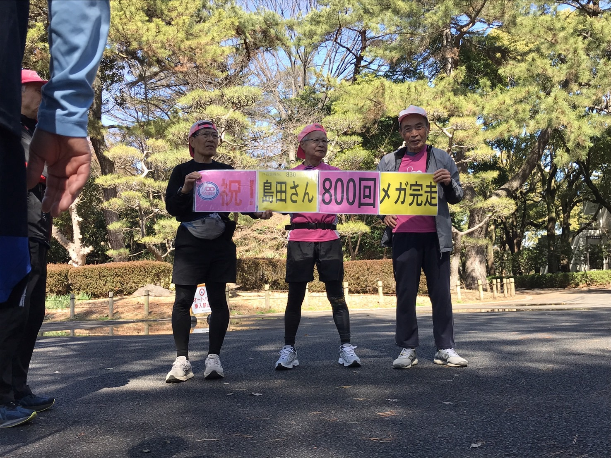

2026-02-18 18:07:54
2026年２月１８日（水曜日）（平塚総合公園、晴れ、8時7.5度）（担当：佐藤）
| No | 白鷺 | 氏名 | 種目 | タイム | フル百 |
|---|---|---|---|---|---|
| 1 | 403 | 飯田 和好 | フル | 6:46:29 | 861 |
| 2 | 98 | 田中 国貞 | フル | 6:56:18 | 746 |
| 3 | 340 | 島田 八十美 | フル | 6:57:11 | 830 |
| 4 | 333 | 山口 義治 | フル | 7:07:32 | 827 |
| 5 | 11 | 渡辺 富夫 | フル | 7:28:39 | 69 |
| 6 | 157 | 佐藤 義雄 | フル | 8:14:36 | 790 |
| 7 | 30 | 竹田 昭彦 | フル | 9:12:01 | 3 |
| 8 | 32 | 金子 正典 | 25.6km | 4:29:51 | 253 |
| 9 | 124 | 村川 進 | 15.3km | 1:50:35 | 781 |
| 10 | ー | 吉村 貴志 | 15.3km | 伴走 | 一般 |
| 11 | 318 | 阿部 真 | 15.3km | 3:10:30 | 818 |
| 12 | 426 | 市川 直子 | 10.2km | 1:47:56 | 一般 |
| 13 | 145 | 植田 秀夫 | 6.8km | 1:21:00 | 787 |
コメント；天気も良く適度な温度で走りやすい状態でした。最後まで皆さん頑張りました。

島田さん記念撮影（湘南WM777回時に撮影）